Galatea (released October 2023) is a concept album built around the ancient Greek myth of Pygmalion and the statue, Galatea. The album used the tale as a lens for identity, perfectionism, and self-creation.
I independently led the album’s full marketing and release strategy. The goal was to test whether a concept-driven indie-R&B release could earn international reach and critical credibility off of narrative strength and execution alone.
- Released
- October 2023
- Focus
- Press
- Role
- Full marketing & release strategy
- 450K+album streams
- 5press features
- Fresh FindsAfrica Artist of the Month
Marketing Strategy Breakdown
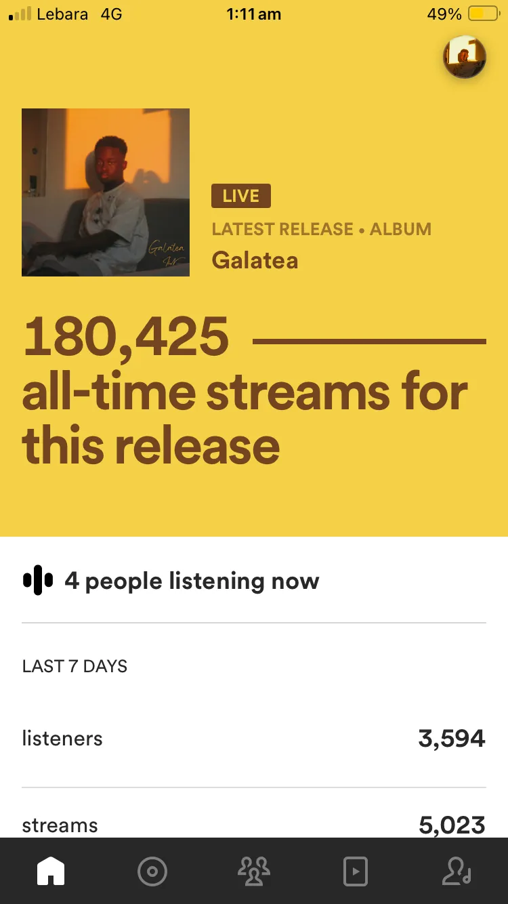
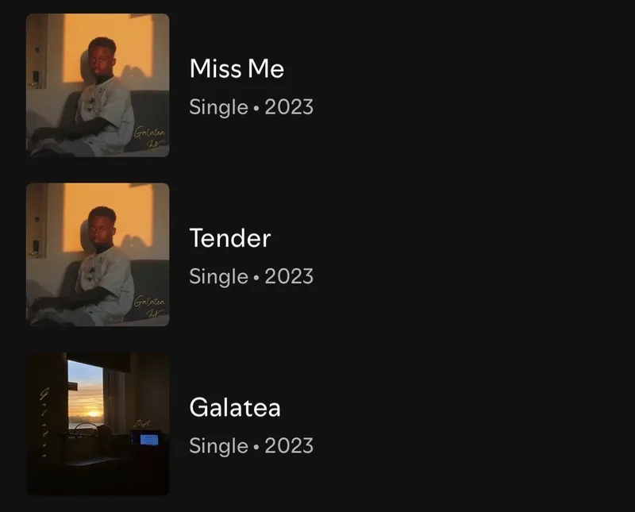
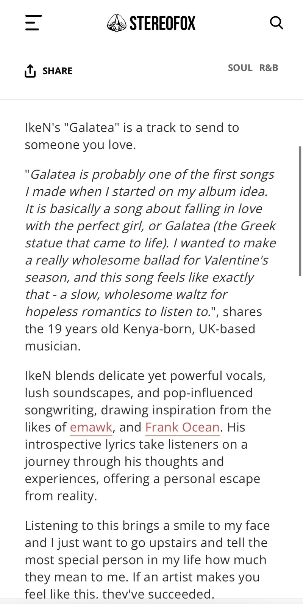
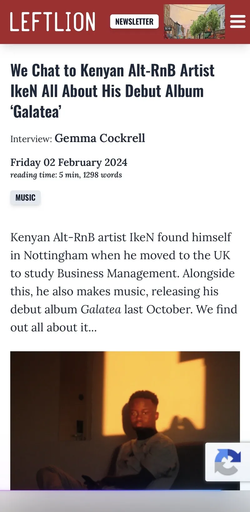
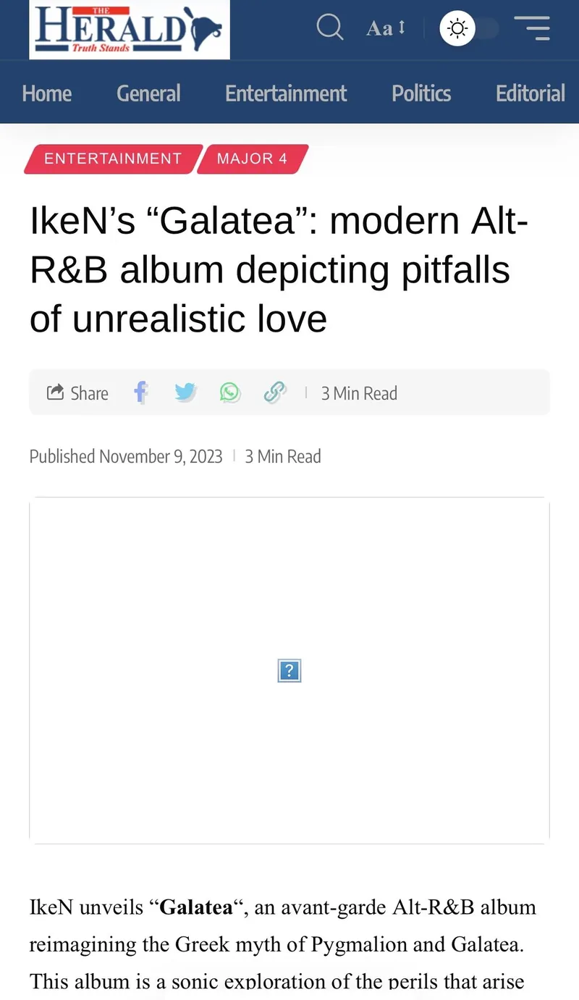
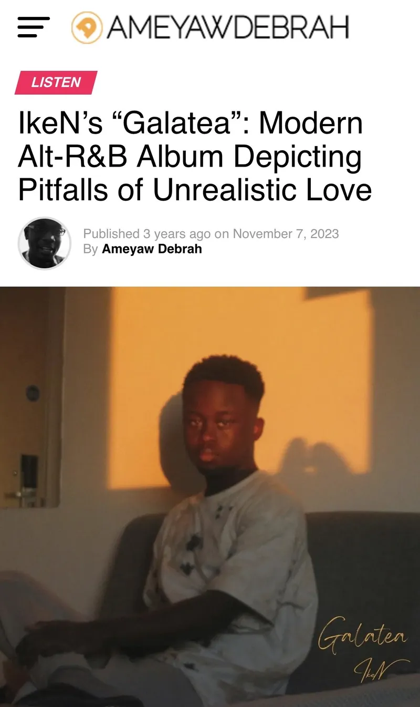
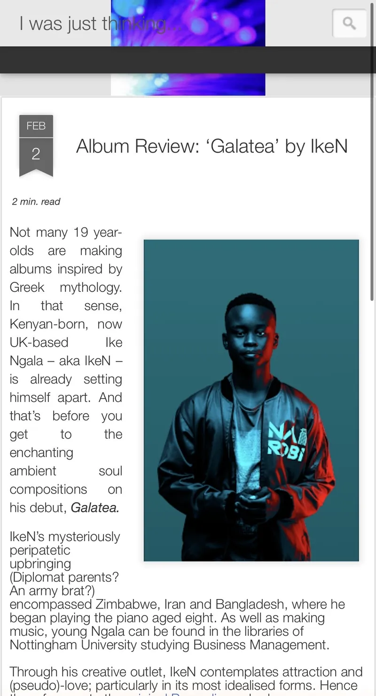
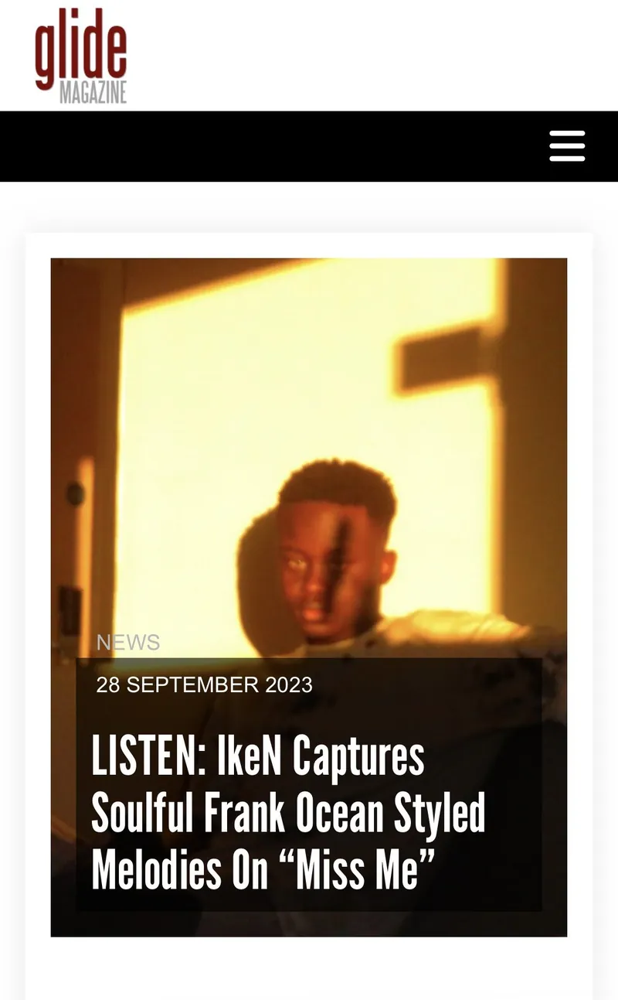
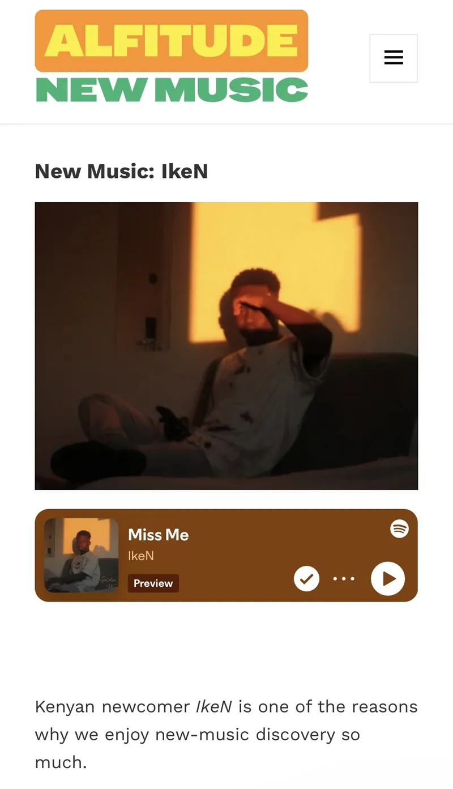
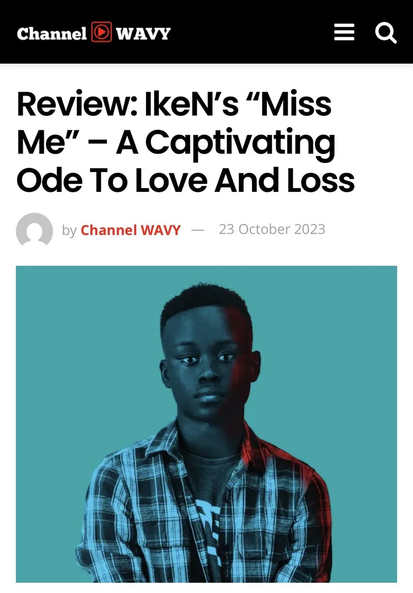
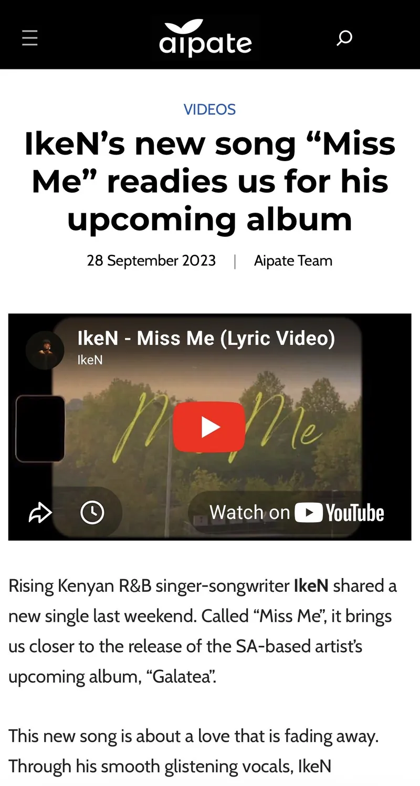
Outcomes
The strategy was quite successful, leading to organic TikTok and Instagram amplification, an increased number of active listeners, and served as a proof of concept for future projects. Areas of success included:
Pre-release singles had generated 180K streams by album release day; the project has since grown to 450K+ streams - sustained organic growth well past the initial release window.
Reach
Covered by Alfitude, Stereofox, Aipate, Ameyaw Debrah, and Glide Magazine - press pickup spanning African and international outlets. The campaign’s reach also earned Spotify editorial recognition:
IkeN was selected as one of the Fresh Finds Africa Artist of the Month, July 2024, placing the project on Spotify’s own radar.
Editorial Coverage
Added to Cocoa Butter, Eastern Vibes (cover placement), Up:Date, Sizzlers, NMF Kenya, POLLEN, and Amazon Music’s “Breakthrough R&B” - spread across independent curators, regional R&B platforms, and DSP editorial playlists.
Playlist Placement
“Tender” emerged as the campaign’s strongest performer, currently at 120K streams, validating the lore-driven content strategy’s ability to convert narrative engagement into repeat listening.
Standout Single
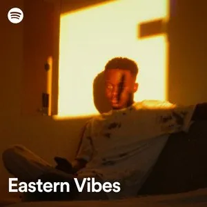
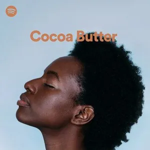
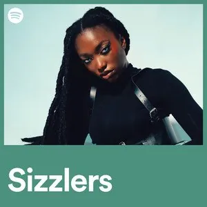
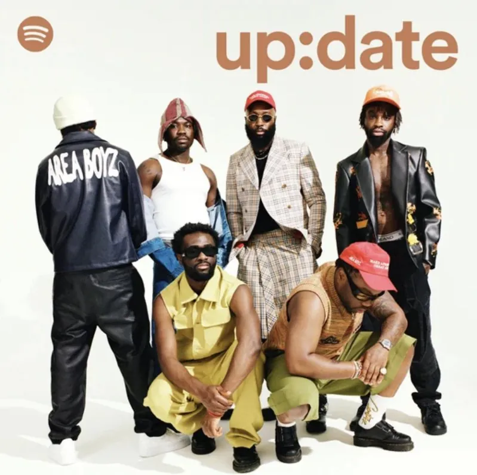
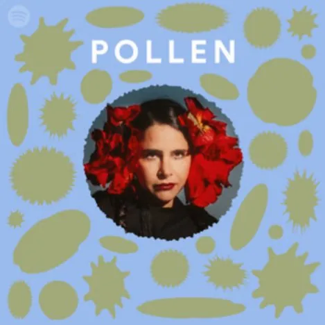
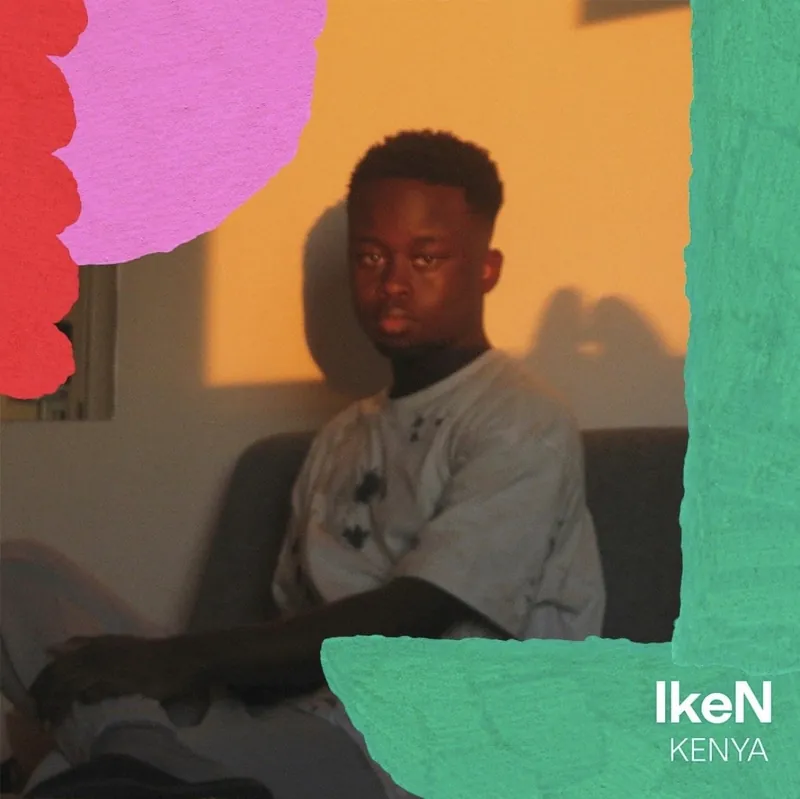
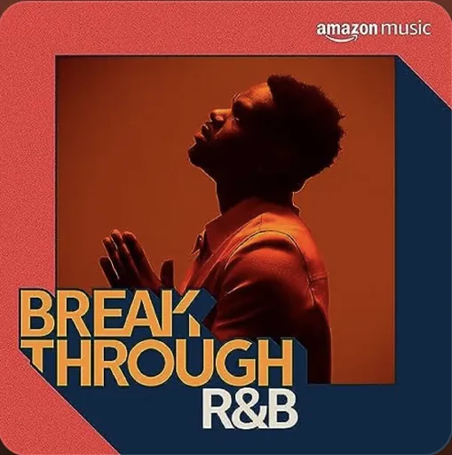
Key takeaway
A strong concept gives press and playlists a story to tell. Building the campaign around the Pygmalion myth gave every single, post and pitch a hook, so the narrative did the work a large budget usually does.